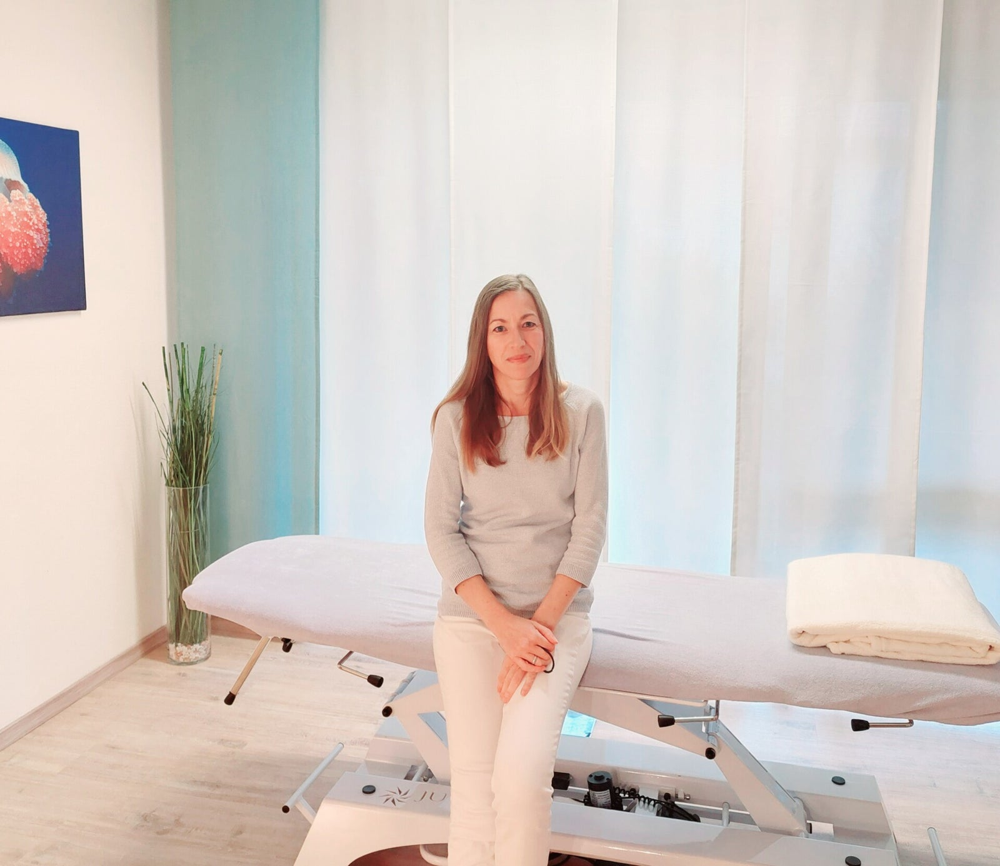
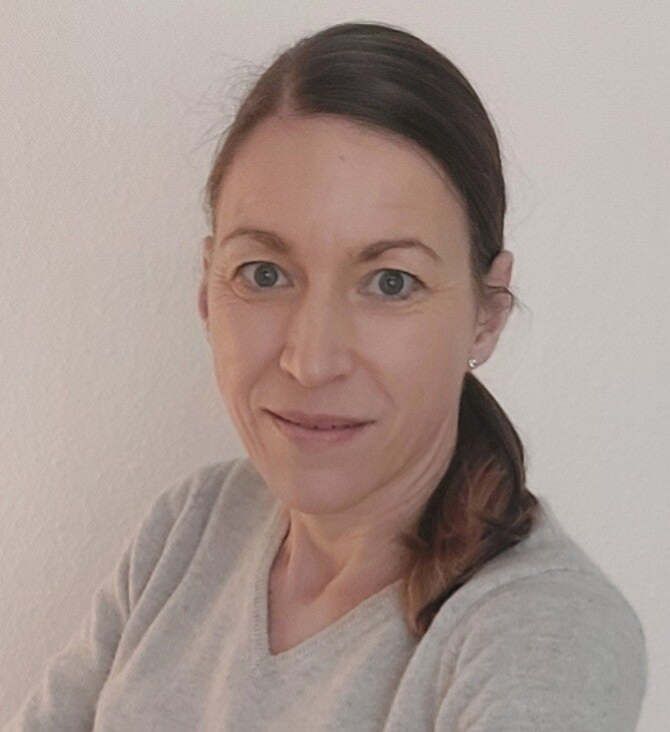

Rücken, Nacken, Kiefer oder Kopfthemen
Warum Sie kommen: Beschwerden wiederholen sich, Beweglichkeit fehlt oder Zusammenhänge sind unklar.
Warum Sonja passt: Zeit für Anamnese, manuelle Befundung und ruhige Behandlung.
Passende Behandlung ansehenOSTEA - Sonja Hoffmann
In meiner Praxis OSTEA begleite ich Sie mit ruhiger, manueller und ganzheitlich orientierter osteopathischer Behandlung. Der Schwerpunkt liegt auf individueller Betreuung, achtsamer Befundung und besonderer Erfahrung in der Arbeit mit Babys und Kindern.

Ihr Einstieg
Viele Besucherinnen und Besucher wissen nicht, ob Osteopathie zu ihrem Anliegen passt. Diese Einstiege helfen Ihnen, sich schnell einzuordnen und den passenden nächsten Schritt zu finden.
Warum Sie kommen: Beschwerden wiederholen sich, Beweglichkeit fehlt oder Zusammenhänge sind unklar.
Warum Sonja passt: Zeit für Anamnese, manuelle Befundung und ruhige Behandlung.
Passende Behandlung ansehenWarum Sie kommen: Unruhe, Spannung, Asymmetrien oder Fragen nach Schwangerschaft und Geburt.
Warum Sonja passt: Kinderosteopathie ist Schwerpunkt, mit spezieller Ausbildung und ruhiger Arbeitsweise.
Kinderosteopathie verstehenWarum Sie kommen: Becken, Rücken, Atmung oder Gewebe brauchen Aufmerksamkeit.
Warum Sonja passt: Erfahrung mit Schwangerschaft, Babys und sanfter manueller Begleitung.
Schwangerschaft ansehenWarum Sie kommen: Beschwerden entstehen bei Belastung oder Regeneration dauert zu lange.
Warum Sonja passt: Sportosteopathie und craniosacrale Therapie ergänzen den ganzheitlichen Blick.
Qualifikation ansehenBehandlungsschwerpunkte
Osteopathie ist ein manuelles Verfahren. Im Mittelpunkt stehen Beweglichkeit, Gewebe, Zusammenhänge im Körper und die Frage, ob eine osteopathische Behandlung für Ihr Anliegen sinnvoll ist.
Menschen kommen häufig mit Beschwerden rund um Wirbelsäule, Gelenke, Muskeln, Kiefer oder Kopfthemen in die Praxis. Im Ersttermin wird geprüft, welche körperlichen Zusammenhänge für Ihr Anliegen relevant sein können.
In Schwangerschaft und Wochenbett verändert sich der Körper deutlich. Die Behandlung bietet einen ruhigen Rahmen, um Becken, Rücken, Atmung und Gewebe achtsam zu begleiten.
Ein besonderer Schwerpunkt von OSTEA ist die Behandlung von Säuglingen und Kindern. Dabei arbeite ich behutsam, aufmerksam und mit viel Ruhe für Kind und Eltern.
Säuglinge, Kinder & Eltern
Die Behandlung von Babys und Kindern braucht Zeit, Ruhe und eine gute Wahrnehmung für kleine Signale. Vor der Behandlung sprechen wir über Schwangerschaft, Geburt, Entwicklung und das aktuelle Anliegen.
Eltern kommen häufig mit Themen wie Verdauung, Schlaf, Unruhe, Stillen, Haltung, Asymmetrien oder Begleitung nach besonderen Geburtsverläufen. Ob und wie Osteopathie sinnvoll ist, klären wir individuell im Termin.
Ablauf & Kosten
Eine Sitzung dauert meistens etwa eine Stunde. Bei Babys und Kindern wird die Behandlungsdauer individuell angepasst.
Zu Beginn sprechen wir ausführlich über Ihr Anliegen, Ihre Beschwerden und Ihre gesundheitliche Vorgeschichte.
Ich untersuche Beweglichkeit, Spannung und körperliche Zusammenhänge, um die Behandlung passend auszurichten.
Die osteopathische Behandlung erfolgt manuell, ruhig und individuell auf die aktuelle Situation abgestimmt.
Wenn sinnvoll, erhalten Sie Hinweise für die Zeit nach der Behandlung und den weiteren Verlauf.

Über mich
In meiner Arbeit ist mir wichtig, den Menschen nicht auf einzelne Beschwerden zu reduzieren. Ich nehme mir Zeit für Ihre Geschichte, Ihre aktuelle Situation und die Zusammenhänge im Körper.
Besonders in der Behandlung von Babys und Kindern arbeite ich mit Ruhe, Achtsamkeit und Erfahrung. Meine fachlichen Schwerpunkte entwickle ich regelmäßig weiter, unter anderem in Kinderosteopathie, Sportosteopathie und biodynamischer craniosacraler Therapie.
FAQ
Die wichtigsten Informationen vor dem ersten Besuch in der Praxis.
Der Ersttermin beginnt mit einer ausführlichen Anamnese. Danach folgen osteopathische Befundung und Behandlung. Manchmal geht die Befundung direkt in die Behandlung über.
Das ist individuell unterschiedlich. Bei akuten Anliegen reichen manchmal wenige Termine, bei länger bestehenden Beschwerden kann eine Begleitung über einen längeren Zeitraum sinnvoll sein.
Bitte bringen Sie ein Handtuch mit und tragen Sie bequeme Kleidung. Bei Babys bitte eine Wickelunterlage oder ein zusätzliches Handtuch mitbringen.
Die Abrechnung erfolgt nach dem Gebührenverzeichnis für Heilpraktiker (GebüH). Viele Krankenkassen bezuschussen osteopathische Behandlungen ganz oder anteilig. Bitte klären Sie die Erstattung vorab direkt mit Ihrer Krankenkasse.
Trinken Sie ausreichend Wasser, planen Sie Ruhe ein und bevorzugen Sie leichte Bewegung. Auf intensive körperliche Belastung oder Sport sollten Sie ein bis zwei Tage verzichten.
Ja. Sie können den Calendly-Link zur Online-Terminbuchung nutzen oder sich telefonisch beziehungsweise per E-Mail melden.
Kontakt
Termine können Sie online buchen. Für Fragen erreichen Sie mich telefonisch, per E-Mail oder per WhatsApp.
Heilpraktikerin
OSTEA - Praxis für Osteopathie
Die Praxis befindet sich in der Bahnhofstraße 75 in 71332 Waiblingen. Bitte prüfen Sie Ihre Anfahrt vorab über den Kartenlink.
OSTEA in Waiblingen Standort in Google Maps öffnenRechtliches
Die Angaben wurden aus der bestehenden Seite übernommen und auf die neue Praxisadresse angepasst. Vor Livegang sollten Impressum und Datenschutz rechtlich final geprüft werden.
Angaben nach § 5 DDG
OSTEA - Praxis für Osteopathie
Sonja Hoffmann
Bahnhofstraße 75
71332 Waiblingen
Telefon: 0177-7 41 55 50
E-Mail: s.hoffmann@ostea.de
Berufsbezeichnung
Heilpraktikerin. Die Erlaubnis zur Ausübung der Heilkunde nach dem Heilpraktikergesetz wurde vom Gesundheitsamt der Stadt Heilbronn erteilt.
Zuständige Behörde
Gesundheitsamt Waiblingen, Bahnhofstr. 1, 71332 Waiblingen
Streitschlichtung
Ich bin nicht bereit oder verpflichtet, an Streitbeilegungsverfahren vor einer Verbraucherschlichtungsstelle teilzunehmen.
Diese statische Website nutzt keine eingebundenen Analyse-Tools, kein Kontaktformular und keine extern geladenen Webfonts. Beim Aufruf können durch den Hosting-Anbieter technisch erforderliche Server-Logdaten verarbeitet werden.
Bei einer Kontaktaufnahme per Telefon, E-Mail, WhatsApp oder über den externen Terminbuchungslink werden die von Ihnen übermittelten Daten zur Bearbeitung Ihrer Anfrage verarbeitet.
Externe Links führen zu Calendly, Google Maps und WhatsApp. Beim Anklicken gelten die Datenschutzbestimmungen der jeweiligen Anbieter.
Verantwortlich für die Datenverarbeitung: Sonja Hoffmann, Bahnhofstraße 75, 71332 Waiblingen, s.hoffmann@ostea.de.